|
|
|
|
|
The Red Sea - Part 1
From Eritrea to Eygpt
G’day to you all.
Well, we’re still stuck here in Hurghada waiting for the ubiquitous “weather window” so we can dash the last 200 miles to Port Suez. So close, so windy.
While the last email found us in Eritrea, finishing off the celebratory BBQ having salvaged Cool Change, the weather has been an over-riding influence on our lives over the past few weeks. So, maybe we’ll start with a chat about the Red Sea weather.
Weather in the Red Sea
We’d read numerous reports from other yachts about the Red Sea and while most loved it for its beauty, not one had a good word to say about its weather. Add us to that list.
The Red Sea has three basic weather patterns – down south, the winds are predominately southerly, being created and affected by the weather from the Gulf of Aden and the Indian Ocean. While they can be strong, as we had already seen, at least they are helping you get where you want to.
In the north, the winds are the opposite – predominately from the north and affected by what’s happening around the eastern Med. These too can be strong.
Around a quarter of the way up, is the Convergence Zone – a relatively narrow boundary between the northerlies and the southerlies where the winds are light and variable. From year to year, it wanders a bit north or a bit south - from a yachties perspective, a good year is when it wanders north, giving a longer time in the southerlies. This year was a bad year; the zone was well south so we endured lots of northerlies.
The other issue is
forecasts. We, like most yachties, rely a lot on the GRIBS,
the compressed data files we can download via our HF radio.
It’s always worth treating their accuracy with a fair pinch
o 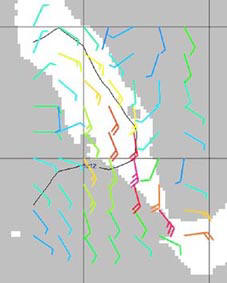
The record was when the GRIBs showed 2kts, we got hit with 40kts. That 38kt difference made for a miserable day.
The reason is the geography of the Red Sea – basically a long finger of water. Whereas a small variance between actual and forecast in the open ocean may only be a few knots difference, the localized funneling affects amplify the winds.
Discussion of weather and weather windows tends to dominate the daily radio skeds, mainly with southern boats asking northern boats what their weather was. The weather 100 miles north of you is probably what you will get in 24 hours.
If you want an idea of what the weather was like, check out this short video shot by Michelle of Mailys.
It shows Hinewai approaching an anchorage in a pretty normal set of seas for the Red Sea.
Click the start button to begin the video stream (if you can't see the little media player box below, you may need to OK "Blocked Content" from the bar at the top of the Page - Thanks Bill!). Media Player will start as soon as it's buffered enough. If you want to download the file, click here
From Eritrea to the Sudan
With Cool Change and its single hander skipper, Peter, now safely watertight and afloat again, most of the other yachts left Dannabah Island the next day, but Island Fling and Hinewai hung around for a couple days offering what help we could until Peter was happy with his jury rigging.
Then, with a reasonable
forecast in hand, the three boats headed off for Mersa Dudo,
a small anchorage where we were due to meet another yacht
who was going to escort Cool Change to Massawa where
Peter planned to have the major repair work done. 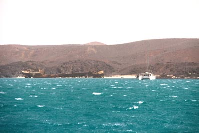
The first bit of the trip was fine, albeit a little windy. Then we had to weave between a couple of islands and work our way round into the anchorage. By the time we got there, we had 35kts from the south, with a few gusts over 50kts. Fortunately, you anchor close inshore with a big extinct volcano to the south – it tends to kill the waves, but the wind still whistles around its flanks. With our first big bank of coral reef close by to the west, we were a tad nervous, but there were another 15 boats sheltering there so we guessed it was OK.
The afternoon was spent helping Guy of Mailys unsnag his anchor – he’d lost two in India and this was his last spare – we popped out in his dinghy and with some vigorous pulling on his tripping line, eventually managed to free it, only to be towed backwards as the wind took Mailys. Michelle, Guy’s partner, adroitly motored the boat into an open patch of water and re-anchored. By the time, Peter got back to Hinewai, he was soaked.
A couple of yachts had left before we arrived and they called up saying that conditions were far easier just 30 miles north so we decided we’d leave the Marsa. It went against much pre-conditioning to be lifting our anchor in the dark with such a strong wind, but the forecast suggested that if we didn’t go now, we could be stuck for a few days. As it turned out for some of the boats that stayed.
The yachts to our north
were right – after a pretty busy five hours the winds
dropped right out and we had a very pleasant sail under the
moonlight. Indeed the conditions were so nice, we decided
to press on while we could and cover the 280 miles north to
Khor Nawarat, a large bay with numerous small islands within
it and some lovely reef islands along its edge to knock down
the surf. 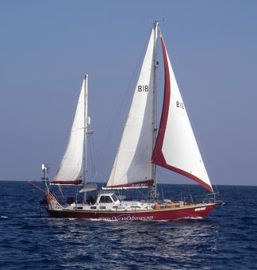
It was the best sail we had in the whole of the Red Sea, with kind winds. Just as well since just south of Massawa was our first experience of navigating through reefs but all went smoothly.
Dawn was just breaking as we arrived and we had to hang back for a while as 8 other yachts left through the narrow passage. But it was worth the wait. We came in slowly and cut in behind the first strip of islands before having to run a mile into the bay to avoid a spur of reef – having passed that safely, we headed back up a mile and anchored off the north western end of Gazierat Kalafiyya.
Nominally an island, it’s basically a dune of sand blown from the desert that has piled up over the years on a coral reef. It’s a couple of miles long, a mile wide and maybe 30 feet high at its highest point. And as we arrived, it was crowned by a couple of camels silhouetted against the sky. After a few “Ah, look at the camels” comments, we both dozed off.
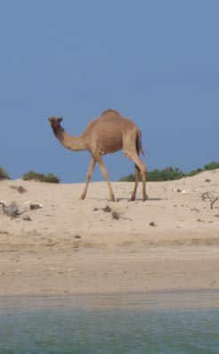 And woke to see Island Fling working its way towards us.
Relaxing and Camels
It had been a pretty full three day trip up to Khor Narawat so we decided that we would spend a couple of days here. Bob and Leonie came over in their dinghy for coffee before heading ashore with Jean to explore, leaving Peter to work on the rudder bearing that was still leaking water into the boat.
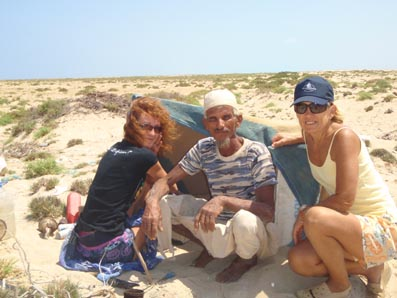 As the dinghy drifted across the narrow coral shelf that surrounded the island and onto the sandy beach, they were greeted by the camel herder, a little wizened old man with a smile that lit up his face. In a mixture of Arabic and grand gestures with his hands, he invited them up to his little shelter to look at the collection of gifts that yachties have left him over the years.
And then he took them to
see his pride and joy –an ancient wooden boat, maybe 12ft.
long with a rough mast and a lateen rig. He needed the
boat not only to get to and from the island but also to herd
the camels which had 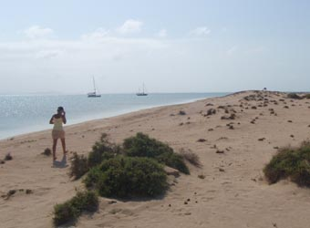
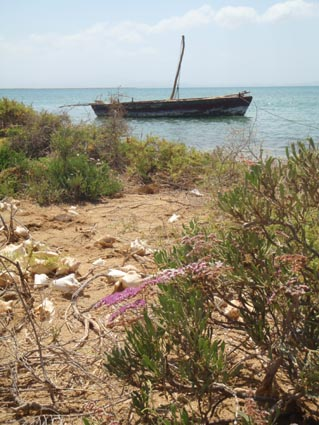
After a couple of hours on
the island, chatting with the herder, walking over the dunes
among the sparse scrubby bushes getting close, but not too
close, to the camels and collecting other shells from the
beach, having a brief snorkel, the three intrepid explorers
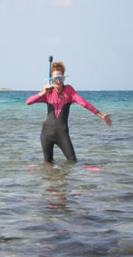
The next day Peter decided to rest his knee on board so the others took the gifts along with some tee shirts and some food across to the island. The old man was delighted, especially with his framed photographs and over the next weeks, several yachties came up to Jean and said they recognized her from a photograph a little old camel herder had shown them.
Suakin – a city of ruins
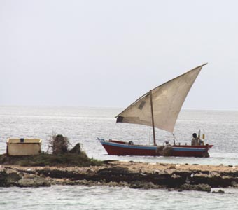 It is possible to reach Suakin in a day sail from Khor Narawat, but if anything slows you down it can mean you arrive after dark. With its narrow and shallow entrance, that is not a good idea. So we decided to leave late and sail overnight, arriving around 10:00 AM. We were so glad we had done that with the final part of the channel being no more than 20ft. wide.
But this is why Suakin is now a ghost town. 200 years ago, it was one of the most prosperous trading ports in the Sudan with slaves and trade being carried in Arab dhows all over the Red Sea and beyond. It was also the major jumping off point for pilgrims attending the Hajj across in Mecca. However, by then end of the 19th Century, the combination of the channel being narrowed by coral and overall larger size of ships led the British to decide to create a new port at Port Sudan. Almost overnight, the entire population of Suakin moved to Port Sudan, leaving their once prosperous town to slowly become derelict.
Nowadays, most of the town is in ruins and even the areas where a few people still live are hard to distinguish from the abandoned streets.
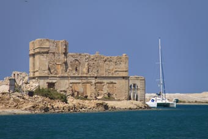 A small new port area has been built right at the entrance and as we approached, we could see a couple of small coasters and a RORO ferry that had backed in and was almost blocking the whole channel. While the channel had channel marks, none of these were as our charts showed – and you had to be very careful of the large concrete stumps sticking out of the water (we realized these were the old channel marks, simply cut off a couple of feet about the water - impossible to see at night).
We squeezed around the end
of the ferry, relying on the old mark one eyeball and a
close eye on the depth sounder as we carefully felt our way
down the channel past one sandbank, and then another that
drove us so close to the shore, we were almost able to touch
the ruins of the grand old hotel. 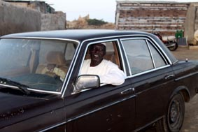
Then promptly nearly went aground in the old port pond. While sizeable, and with only half a dozen yachts in it, a big sandbar extends far further out than the charts show, leaving only a band alongside the old ruined town a safe place to anchor.
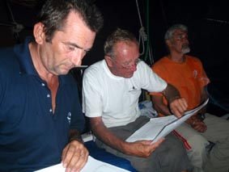 Since this is the first port of call in Sudan, we had to wait on board until the Agent, Mohammed, arrived in his flowing white robes. With the correct forms completed and our passports in hand, he disappeared for a couple of hours before returning our passports and Crew Shore Pass which allows us to go ashore. But by that time it was getting late and we had a Skippers meeting to attend on Island Fling so exploring Suakin would have to wait.
The next morning, Leonie and Jean went ashore to check out the shops while Bob and Peter had the joys of another jerry can refueling run. With both boats pretty empty, it took most of the morning.
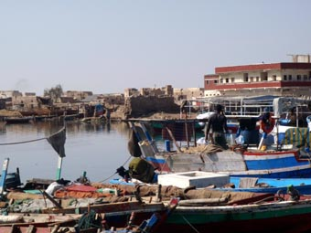 Jean arrived back, overwhelmed by what she had seen, describing it like a “film set”. Once Peter had cleaned himself up, we both went ashore to explore – starting with the inhabited area of the town where the weekly market was being held.
You park the dinghy down
on a ruined causeway with the old island town to your right
– this area is totally abandoned
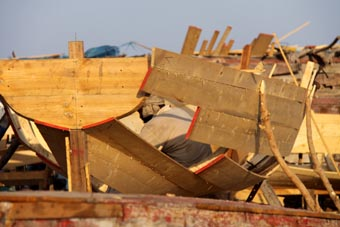 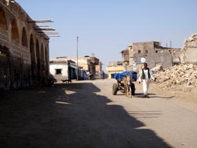
A little further on the “new” town starts – well, mainly old buildings, but with some still inhabited. The streets are wide enough for a couple of donkey carts, the main local means of transport, to pass, and dusty – the dust piling up against the fronts of the houses, covering most of the broken, uneven walkway.
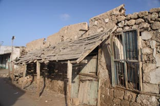
The houses are a light
brown, build of coral rock and sandy mortar. Many have no
roof, maybe a wooden awning across the walkway, but missing
planks or totally collapsed. The wood looks desiccated
showing no rot, deep cracks and splits from the
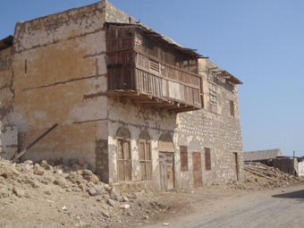
Then suddenly,
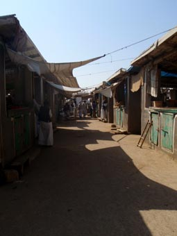 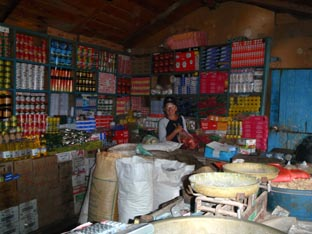
And, as with any Tesco’s or Safeways, to the back, the carpark – in this case, the camel park.
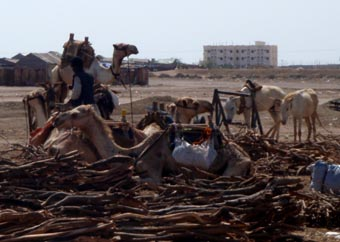
As we headed back with our
fresh fruit and veggies, we discovered the local bakery down
a narrow alley – still producing the last bread of the day
to sell to the hawkers who then take it around the markets.
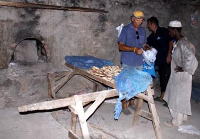
Then onto the ruined
town.
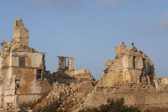 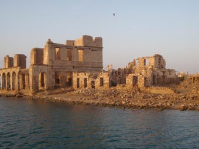
As we wandered through the ruins, we realised that they were not totally deserted as we were approached by beggars or other squatters asking for money or trying to sell some cheap souvenirs. And then met a young girl and her siblings, walking past us in all their finery.
Yet, strangely, the ruins of Suakin had no dark menace of tragedy about them. Maybe it’s because their people were not driven out by war or disease, but happily packed up their belongings and headed north to Port Sudan, leaving their old town to slowly be absorbed back into the desert. And that’s happening – we’d seen a couple of photographs by a young German diver, Hans Hass, taken in the late 40’s – a lot of the town has fallen down since then. A fascinating place to visit.
Click here for more photographs of Suakin
On to Mahommed Qol and the long waits.
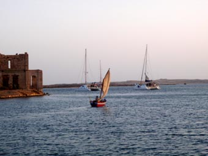
We thought we were up
early the next morning, but as we downloaded the weather,
three other yachts were already slipping down the channel.
The weather didn’t look great, but seemed to be easing
further up the coast – after a chat on the radio with
Mailys, Island Fling
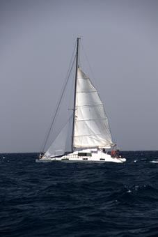
As we convoyed down the channel (Hinewai was a little way back having been caught behind a tiny very slow sailing fishing boat in an area of the channel way too narrow to pass), we met the other three yachts returning.
“Far too bumpy out there,” they called as the came past.
The radio hummed between
us and we agreed we’d head on. It was pretty average at
first – Jean’s note in the log reads “Thunking our way into
the waves. Like a rodeo ride – tack, tack, tack - coast to
one side, reef to the other. Airborne catamarans” – but
eased after a few hours and we easily made Marsa Daror about
17.30. It was another shallow cut in the reef so we made
sure the anchor was well set and after dinner, had a chat
about where to head the next day. 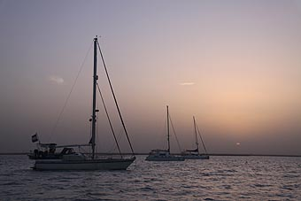
Up again at first light aiming for Marsa Salal, but the weather stayed reasonable so we kept going and anchored in the lee of the Talia Islands. Islands? Sort of three low sand dunes sticking out of the sea, the tops of which spent the night blowing sand onto Hinewai. Still, at least they stopped the waves.
After a quiet night aboard, we upped anchor as soon as the sun started to appear, gingerly motoring round a large coral bombie we spotted way too close alongside, slipped between the western island and the shore and headed on.
The shoreline was every
shade of brown and gold – you could just make out the reef
snuggled up against s small dusty cliff.
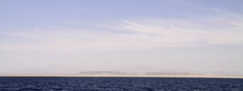
As ever, we’d downloaded the forecast which wasn’t great for the afternoon, but we wanted to be somewhere more sheltered than hanging off a sand dune.
And for once, the forecast was pretty good, although the usual 10kts too light. By noon, the wind was back up to 30kts and we’d lost sight of the land in a strange, almost iridescent white glow. As its edge reached us, we realized it was fine white dust, being lit by the sun straight above.
Muhammed Qol is a little
fishing village, sitting in a small bay with a band of reefs
all around it. For us to enter it meant a convoluted series
of turns to track through the passage using the leads –
these are two posts set so that they line up when you are on
the right course (if they start to get out of line, steer
towards the lower one), you follow one set of leads until
the next set line up and then turn
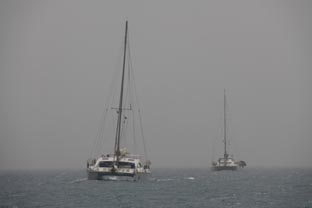
We arrived just after Mistral, followed soon after by Island Fling. But just before they reached the anchorage, Guy and Michelle arrived in Mailys and horrified us by ignoring the leads, heading straight across the reef. But then he’d been here before and knew his shallow draft catamaran would clear the reef.
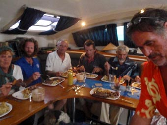 And here we stayed for four days, waiting for the wind to drop. The bottoms got great holding so the boats were secure, the bay was shelter from the waves, but the noise of the wind whistling through the rigging was always there.
You amuse yourself as best
you can. We had diner parties on the yachts – Bob and
Leonie of Island Fling did a full Roast Beef and
Yorkshire Pud dinner (Oh, for a huge chest freezer) – roast
potatoes courtesy of Hinewai (thanks Arthur), we did
a curry night and Mailys did fish, French style. You
fix all the little things that have broken, check anything
that might break, catch up on the log – and, of course, head
ashore to find the market for fresh food. 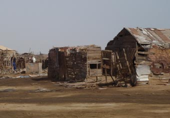
Only to find a ghost
town. The whole of Mohammed Qol was just a collection of
empty wooden shacks, some falling down, some being
dismantled by a group of disreputable looking Sudanese and a
policeman. 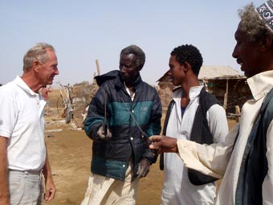
They explained that after a series of bad storm, the town’s water source had been damaged and was no longer sweet, so the government had moved them all further round the coast to a brand new concrete box township (we’d guess that some Western country NGO actually paid).
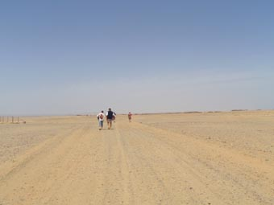 The next day everyone bar Peter (still nursing a bad knee and advised by Jean to rest) headed ashore with a note Jean had written in her best Arabic asking for permission to visit the new town. It seemed to do the trick with the policeman and they were given the OK.
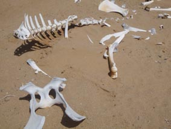 However, hints about a lift feel on deaf (not understanding?) ears so they all headed on foot down the track through the desert. It was only a couple of kilometers, hot and windy, and the cruelness of the landscape was highlighted by bleached camel bones lying on the sand.
One of the first
“buildings” seemed to be the equivalent of the corner café –
with added flies. They eventually understood we were
looking for fresh veg and pointed us to what turned out to
be the meeting house for the village, or rather the men. It
was built of bits of wood with a tin roof, a few chairs and
tables for the elders, floor mats in one corner where some
young men were sitting with their water pipes. 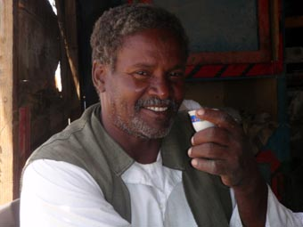
We were made welcome and
given a cup of very strong black tea and a couple of dishes
of food before we were introduced to the headman by another
elder who spoke passable English. With his help, we learned
a bit more about the village and shared stories about all
our respective homes and families. 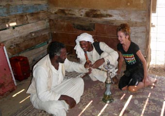
Indeed, they all got on so well that when the headman heard Jean has an unmarried daughter, he became very keen for Natacha to come over to be his wife.
From somewhere, a few wooden boxes of vegetables appeared – tomatoes, potatoes and onions. These are nothing like you’d see in a supermarket – Jean used the word “wizened”, but they taste wonderful compared to the perfect looking pap we’re used to.
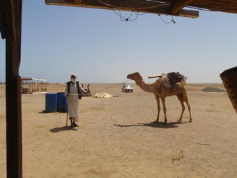 After some good natured haggling, veggies were purchased and after suitable, and respectful, valedictions, Jean and the others asked permission to walk around the village. This was given freely, the elders were so proud of their new town.
Jeans tells of two enduring images. The first was fleeting while sitting in the hut and seeing two shapes coming through the heat haze and dust. As they came closer, they turned into an old man leading a solitary camel, maybe coming into the village for supplies.
The second was more
troubling. She came across the local school, but not one
full of children. Quite a nice concrete box with doors
and
windows, but with a pile of text books and children’s
exercise books laying out front and providing an interesting
meal for the local goats.
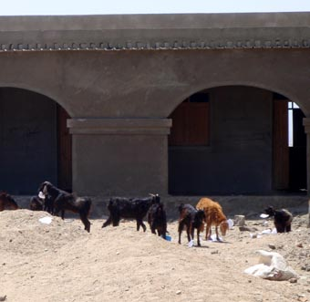
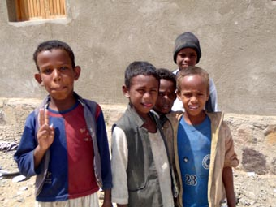 From what she could make out, this was the new, but unfinished school. There was no malice with the pile of books, they’d just been dumped there from the old school. While the kids were still getting some lessons, it felt as if it all got too hard to actually finish it off. Maybe they’d just run out of money.
After a dusty walk back, Jean and the others met up with the Policeman as they’d promised to prove they were leaving, and gave him a thank you gift of some linament for his bad back. He was delighted.
Wreck Recovery Anchorage and old friends
At last, the GRIBS showed a slight drop in the winds the next morning and we decided to take the risk and dash up to another anchorage. It was only 10 miles, but every little bit helps, especially since Lo of Mistral was saying that in all the times he’s sailed the Red Sea, and that is a lot of times, he’s never know such bad weather.
The area north of Mohammed Qol is 30 or 40 square miles of reef systems. Like a maze, you can get through if you know where you’re going, but there are heaps of dead ends. Fortunately, all is well charted and we’d carefully plotted out our route.
This is not an area it would be comfortable to sail so we motored, speeding through the flattish waters where the reefs blocked the waves, but anxiously watching the wind instruments as the wind built. Anxious because we had a 2 mile stretch where we’d have to pop out from behind the reefs to find the entrance to our next anchorage.
With justification, it was horrible with wind and waves from the beam. My, did we roll, and there was almost a sublime pleasure once we’d finally nipped back into through the double set of protective reefs into “Wreck Recovery Anchorage”.
It’s not the best named anchorage we have ever been in – it relates to some dive boat coming south that managed to drive itself straight across the reef, but was savaged – but it was a joy to get there. And a bugger to anchor in – shallow sand across rock. After two failed attempts, we ended up letting heaps of chain out and driving forward and back and forth to try and snag some rock – with 40kts of wind by then and another reef a few hundred yards behind us, we wanted to feel very firm.
Finally we caught – it was
going to be fun to get the anchor up, but for the time being
we were secure. [An aside – in basic terms, you don’t rely
on the anchor holding you in place – you rely on the rode –
the length of chain you lay out. Say we anchor in 20ft of
water, we’ll lay out 100 ft of chain – that means the
wind/current has to lift 80ft of chain off the bottom (in a
curve) before it starts to pull on the anchor – the stronger
the wind/current, the more chain you lay out (we carry 400ft
of chain) – but here we couldn’t lay out heaps of chain –
too much reef and too many bombies too close so we had to
hook ourselves (and hope the rock was substantial). You
also lay out a snubber, a length of thick rope connected a
few feet down the chain and coming back to the yacht. Once
tied off, you ease the chain out so it is slack,
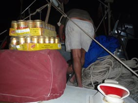
Grateful for the fresh veggies from Mohammed Qol, we settled down to wait for the next weather window. And were looking forward to a couple of days time which was Bob (of Island Fling) birthday – maybe more beef and Yorkshire Pud? Meanwhile, had to get some supplies out of the lazarette.
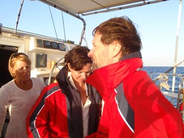 When we awoke on the second day, we had a new guest – a superyacht called Galaxia. We met the Skipper and his partner in Bali so, as you might imagine, we were a little surprised to suddenly see them here. Jean called them up on the radio and invited them to join us for Bob’s party – weather willing, they accepted.
Even in the anchorage, the
waves were still over 3 feet high and steep which made the
usual round of visits between yachts difficult. We all
hunkered down for a couple of days, but none of us were
going to miss Bob’s birthday – albeit we were all 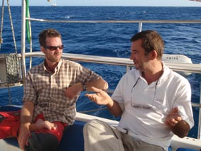
It was a grand afternoon,
mainly spent bemoaning Red Sea weather and trying to work
out when we might be able to go. Oh, we all had a few
drinks as well, and Jean’s chocolate birthday cake she’s
made for Bob went down a treat. 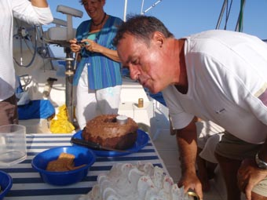
Then it was back to our boats and waiting for the weather break – which took another two days. And it looked as if it was going to be a short break, easing in the morning, building again in the afternoon, than a possible three day window.
On into Egypt
Galaxia left early, just on dawn, and called us up on the radio, rough conditions where they were, but easing. We decided to go for it and around 0700 started to raise the anchor, finally getting it in around 0800. Yes, we were well and truly snagged.
This is not an unusual problem and so far, we’ve managed to work round it. You can use the tripping line (a line tied to the font of the anchor when you drop it, the other end going up to a buoy) to lift the front of the anchor up if it is the anchor that’s caught, but in this case, it was the chain itself that was caught. With Jean on the helm, Peter lets some chain out – Jean then swings the bow across, first in reverse, then forward, trying to sweep the chain out from under or around whatever has caught it while Peter teases the chain in. If it doesn’t work one way, let the chain out again and try the other side – and just keep trying, back and forth. It’s a nervous time – if you can’t get free this way, the options are to dive down and clear it by hand (not an option in these seas) or cut the chain and loose the anchor (expensive).
Galaxia
was right, it was pretty messy once we got out of the
shelter of the anchorage, 3 metre seas, but the wind had
dropped down to 20kts so we pushed on for the six hours it
took to get to Khor Shinab, an indented anchorage. 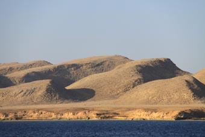
Once through the gap in the fringing reef, you enter this long thin winding bay, weaving your way between various sandbanks. The joy of being in relatively calm water for the first time in over a week was sublime and the scenery made you feel as if you were on the surface of the moon. In places, there were low hills dropping to the water, in others piles of black lava gravel running down to the water then sheer 20ft cliffs of brown and yellow rock alongside sweeping yellow dunes. As ever, in the distance, acute mountain peaks rose up, still black and foreboding.
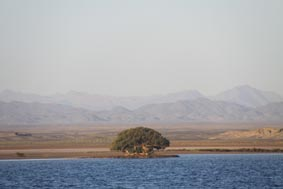
Down towards the end of
the bay, a good 3 miles from the sea, you use a solitary
stunted tree as a marker – a tree that was there when the Khor was first surveyed back in the 1800’s. The small hill
in whose lee we anchored was also a reminder of that old
survey – called Quoin Hill, its shape reminded the surveyors
of a quoin, the wedge of wood used to elevate the cannons on
their ships. 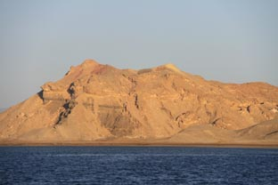
We also had to make a hard decision here. Khor Shinab was, without doubt, the most ruggedly beautiful place we had yet seen and we so wanted to stay and explore for a few days. But the GRIBS we downloaded that afternoon showed a three days of lighter winds before the strong weather closed in again. In three days, we could get to Port Ghalib, but if we stayed, we would likely be caught for a week or more.
We were also facing the
aptly named Foul Bay - a large bight with nowhere to dart to
- if you get caught by the weather, either slog on or turn
back. And
with the season getting
late, the weather windows would get fewer and shorter and
we still had to face the northern end of the Red Sea where
the conditions can get really nasty. 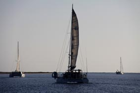
So, with a heavy heart, we decided to get an early night and head off at sparrows the next day.
And it was as well we did.
We did a straight through run over the next thee days and
nights and for first couple, the winds stayed mainly in the 15-20kt
range, the seas retained their nastiness and all the boats
were starting to suffer. We hit a large baulk of wood one
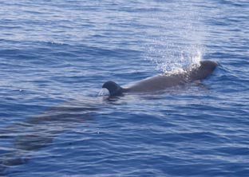
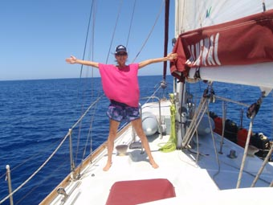 Then the weather eased, we had a visit from a pod of pilot whales again and at 12.20, 2nd April 2009, we crossed the Tropic of Cancer – we had now done Tropic to Tropic – the Tropic of Capricorn crossing through Queensland.
It was just after lunchtime the next day we arrived off Port Ghalib and after dropping and stowing the sails, motored into the entrance to tie up alongside the Customs and Immigration wharf.
We had arrived in Egypt!
Next Log Page: Heading up the Red Sea and a side trip down the Nile
|
|
|
|
|
|
|
|
The Crew The Route The Yacht The Log Guestbook Links Contact Us |
|
|
|
|
|
Home |
|
|
All Original Content of this Web Site Copyright © 2000, 2001, 2002, 2003, 2004, 2005, 2006, 2007, 2008, 2009 Ocean Odyssey Pty Ltd |